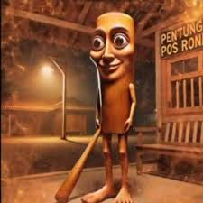

Qui est le personnage de Tung Tung Tung Sahur ?
TUNG TUNG TUNG SAHUR
Faites la connaissance de Tung Tung Tung Sahur,
le bâton de baseball vivant de la collection Italian Brainrot !
Ce personnage AI, devenu viral sur TikTok en 2025,
est un véritable symbole de l'humour absurde italien

 Tralalero Tralala est un personnage fictif généré par IA
généralement un requin dansant en baskets,
vedette des vidéos Italian brainrot sur TikTok.
Il est reconnu pour ses visuels décalés et son attitude silencieusement assurée
Ballerina Cappuccina est un personnage italien de braise introduit le 19 mars 2025 par l'utilisateur de TikTok,
zaironicfun. C'est une ballerine humaine avec une tasse à café comme tête.
Elle est la femme de Cappuccino Assassino. On peut généralement y voir danser ou chanter. Dans une ancienne itération du mème,
on pouvait la voir pirouetant gracieusement. Elle est l'une des premières malsaines italiennes.
Tralalero Tralala est un personnage fictif généré par IA
généralement un requin dansant en baskets,
vedette des vidéos Italian brainrot sur TikTok.
Il est reconnu pour ses visuels décalés et son attitude silencieusement assurée
Ballerina Cappuccina est un personnage italien de braise introduit le 19 mars 2025 par l'utilisateur de TikTok,
zaironicfun. C'est une ballerine humaine avec une tasse à café comme tête.
Elle est la femme de Cappuccino Assassino. On peut généralement y voir danser ou chanter. Dans une ancienne itération du mème,
on pouvait la voir pirouetant gracieusement. Elle est l'une des premières malsaines italiennes.